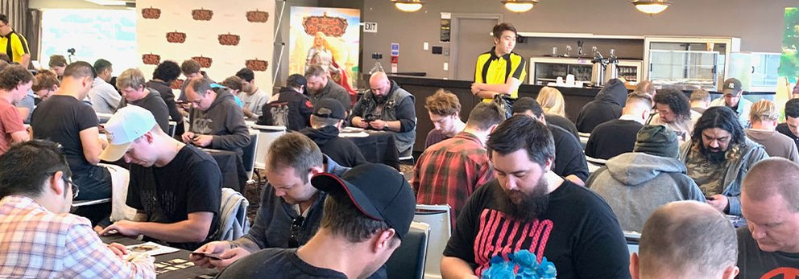
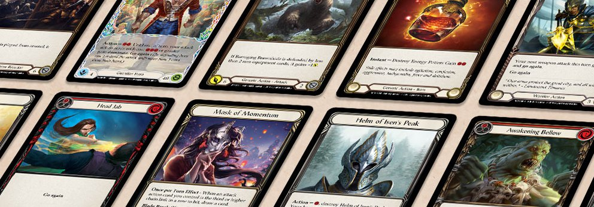

Üdvözzölek a Flesh and Blood magyar bajnokság honlapján honlapján.
Ez a nem hivatalos magyar bajnokság honlapja, ahol a különböző versenyek eredményeit gyüjtjük egy szezonon belül
Jelenlegi legjobb: Kovács Andris
A pontkülönbség: 250
Rólunk
Küldetésünk, hogy húsban és vérben összehozzuk az embereket a nagyszerű játékok közös nyelvén.
A Flesh and Blood-t egy független stúdió hozta létre Aucklandben, Új-Zélandon. A játékosok által a játékosok számára létrehozott Flesh and Blood hét évet töltött a fejlesztéssel, mielőtt 2019 októberében világméretű debütált, amikor megjelent első emlékeztető készletünk, a Welcome to Rathe.
A Flesh and Blood a jó döntéseket jutalmazza, nem a szerencsét. Játékunkkal a TCG kártyaértékelés és a pakliépítés filozófiájának alapvető törvényei ellen próbálunk szembeszállni. Rendkívül interaktív, a cselekvés az első kanyartól kezdődik. A játék egy egyedi erőforrásrendszer köré épül, amely egy innovatív harci dinamikát támaszt alá, amelyet szigorúan teszteltek a versenytárs TCG-fanatikusok.

Globális szervezett játékprogramot működtetünk, amely visszatér a versenyjáték alapjaihoz. A pénzdíjas versenyek egész évben zajlanak, ami a nemzeti és világbajnokságok versenyjátékának csúcsát jelenti. A lezárt fedélzetet, a légterelő huzatot és a konstrukciót átívelő formátumok még a legedzettebb TCG-veteránokat is kihívás elé állítják.
A Flesh and Blood nem csak a TCG-fanatikusok és veteránok számára készült, hanem egy játék a gyűjtőknek és a finom dolgok ismerőinek. Nagyra értékeljük a begyűjthetőséget, és támogatjuk a virágzó másodlagos kártyapiac létezését. Cartamundi barátaink segítségével a Flesh and Blood a TCG kézművesség új szintjén készül, anélkül, hogy figyelmen kívül hagynák a részleteket.
